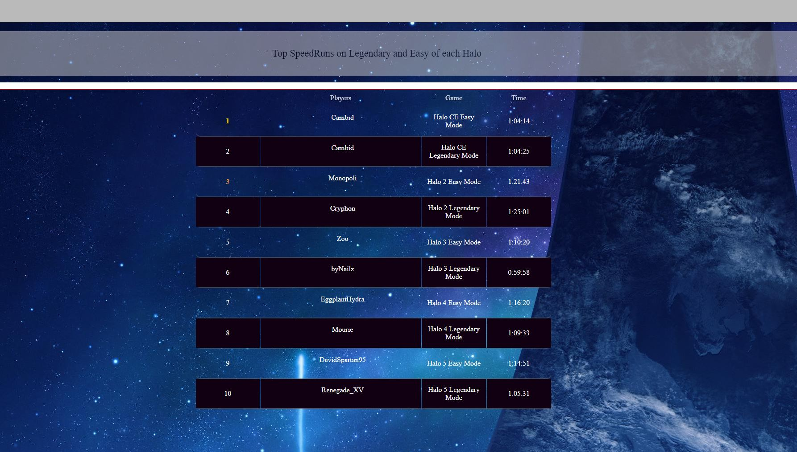
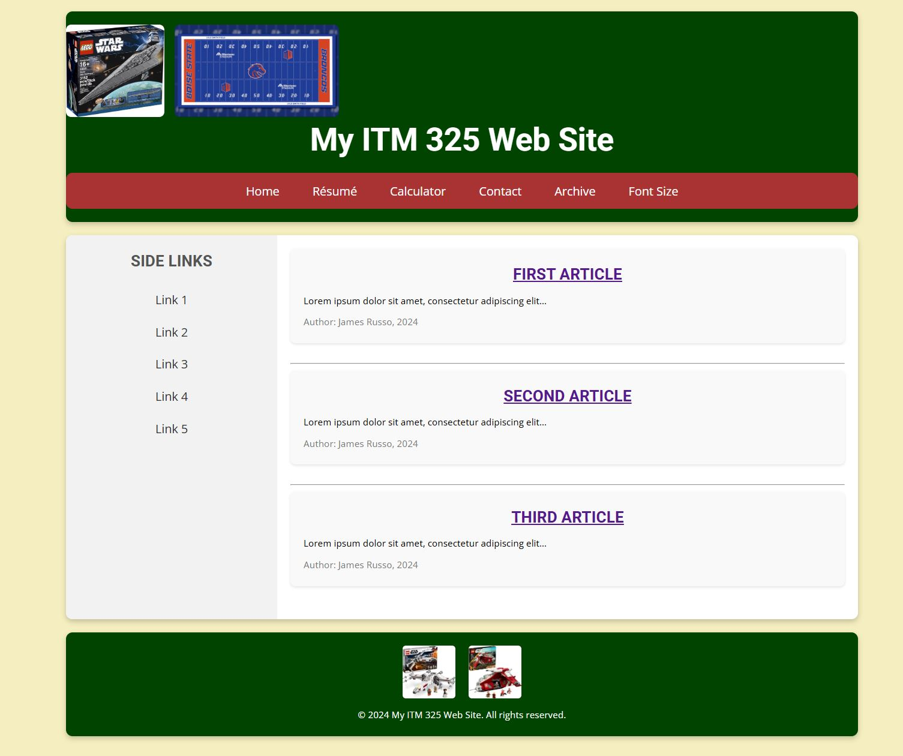
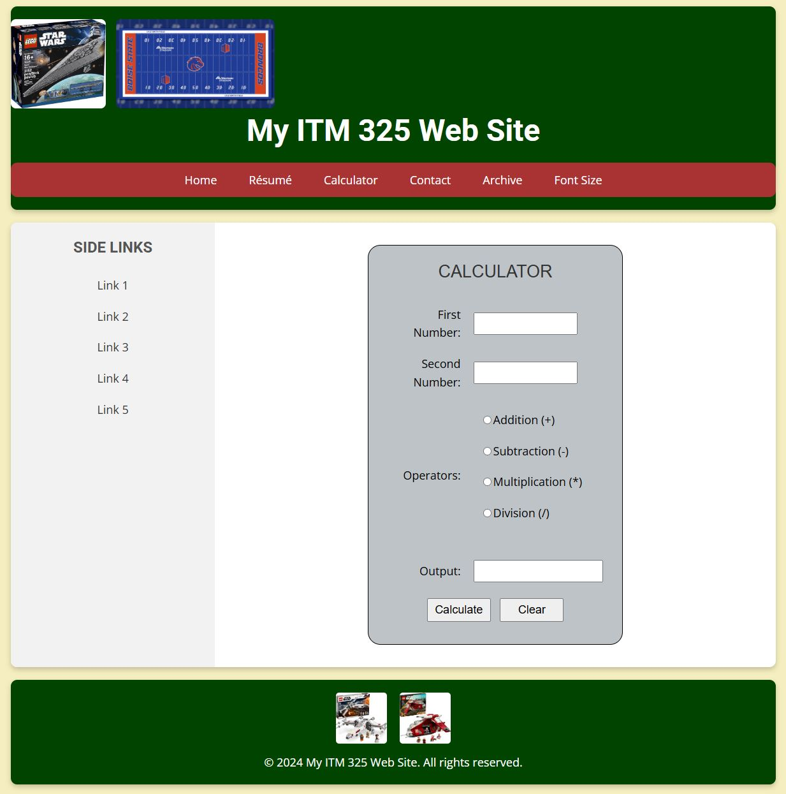
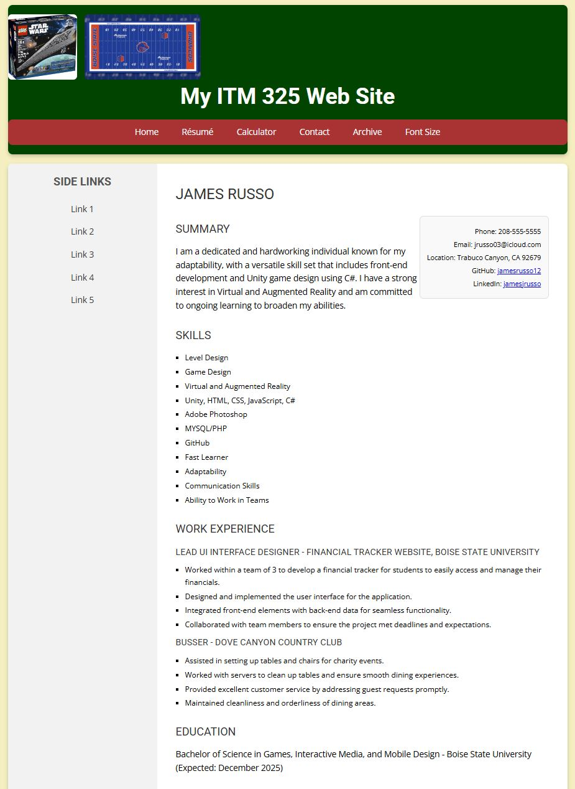
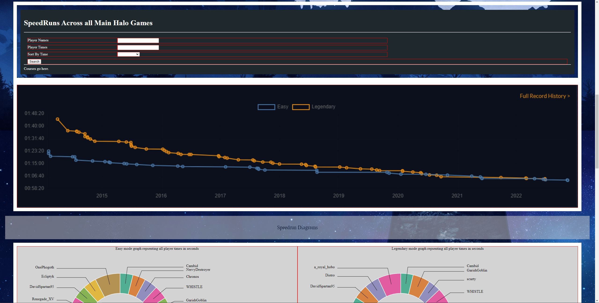
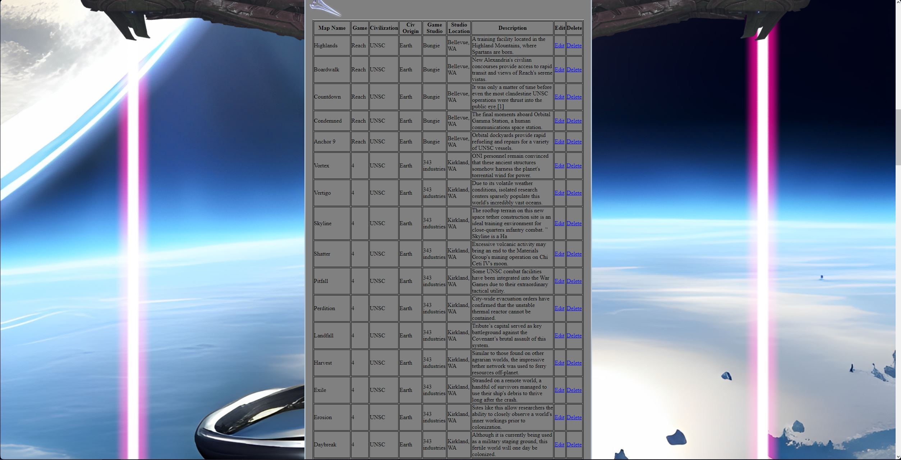
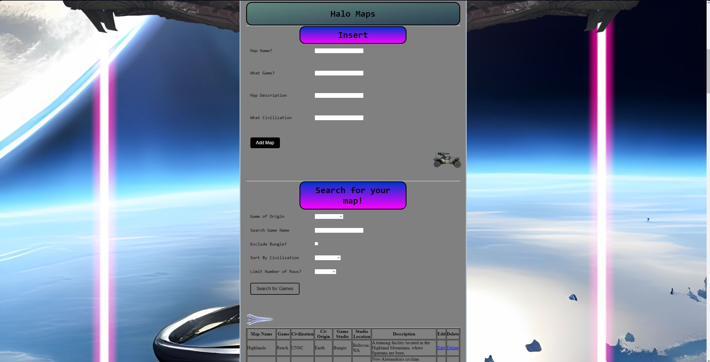
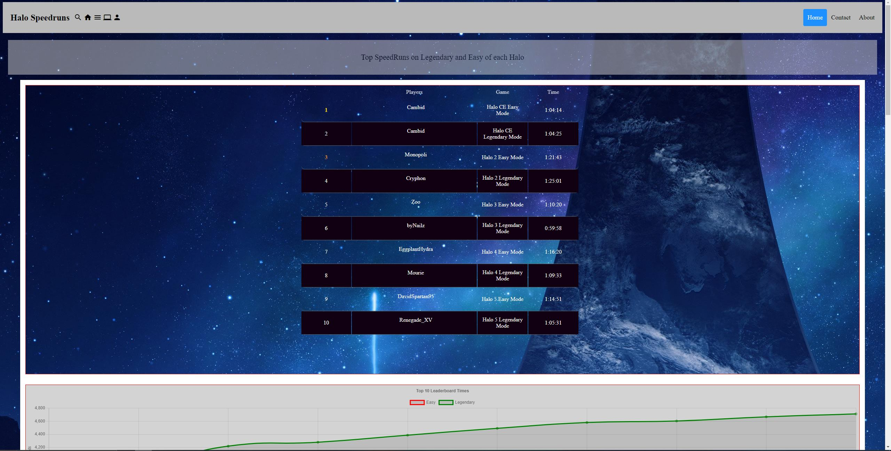
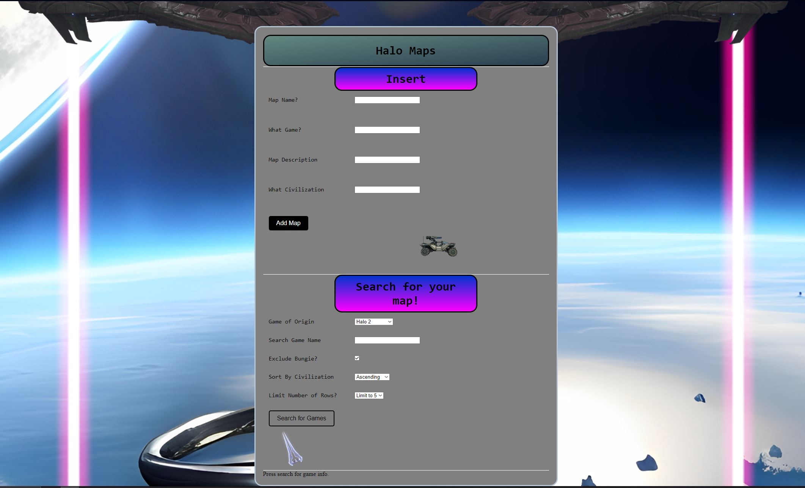
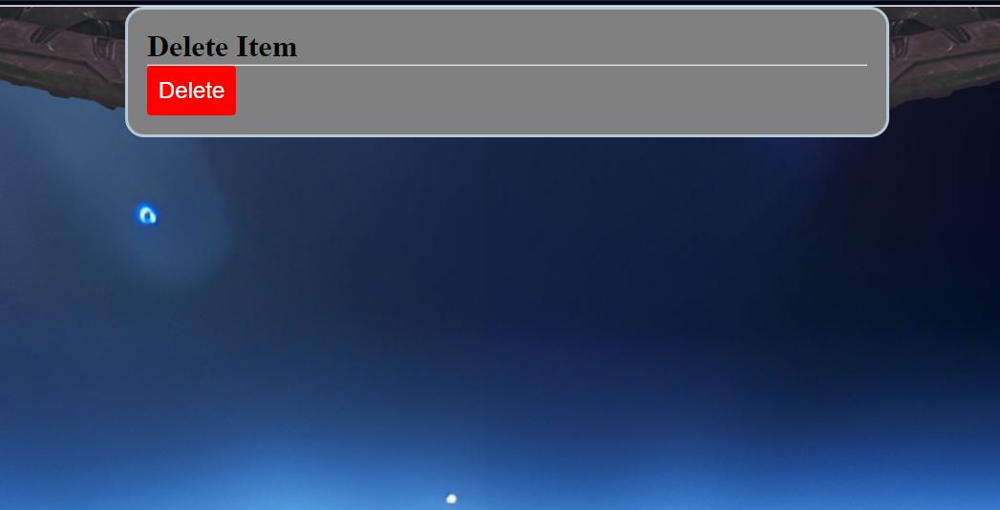

Web Design & Front-End Development
I've designed and built responsive, performance-focused web experiences using modern frameworks and libraries. I've built this portfolio with jQuery, Owl Carousel, and Formspree integration, focusing on accessibility, SEO optimization, and responsive grid layouts. I'm currently expanding my skills with AWS and have a strong foundation in both Google and Apple design practices, with a continuous drive to improve my web development capabilities.
Back to ServicesWeb Development Projects










